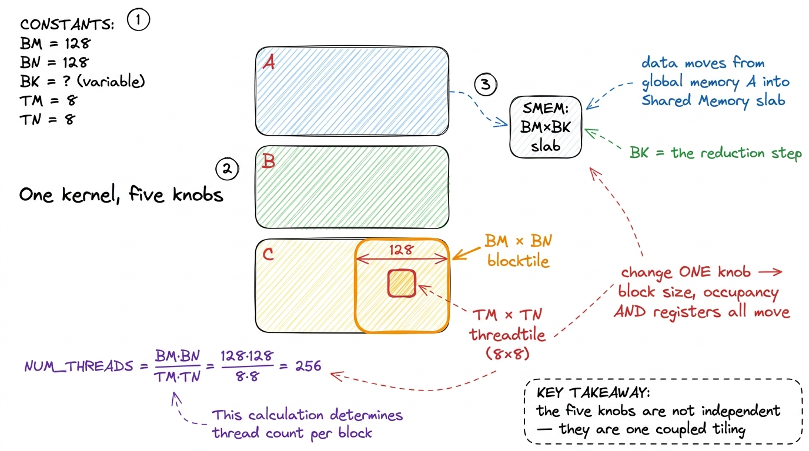
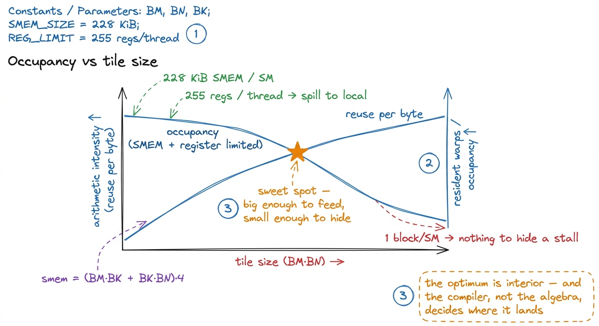
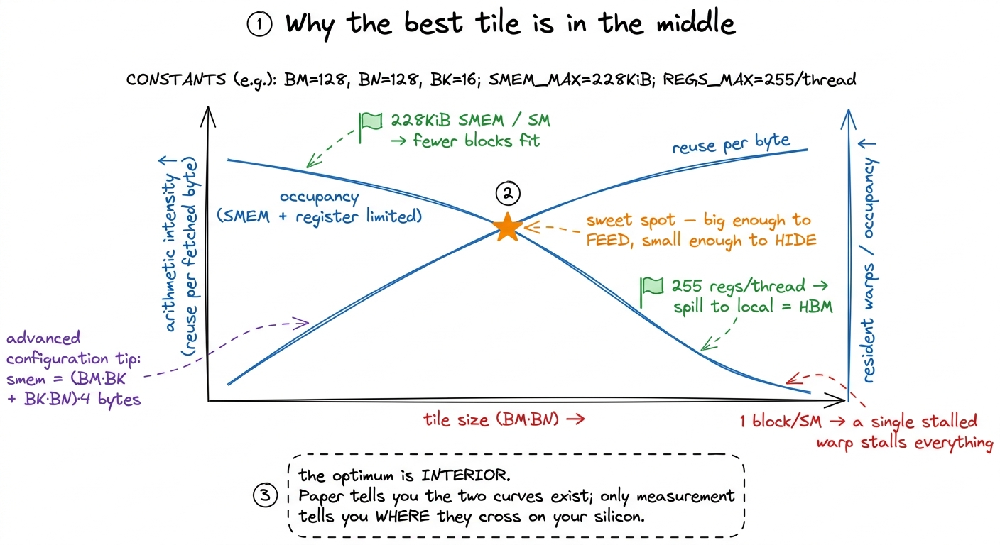
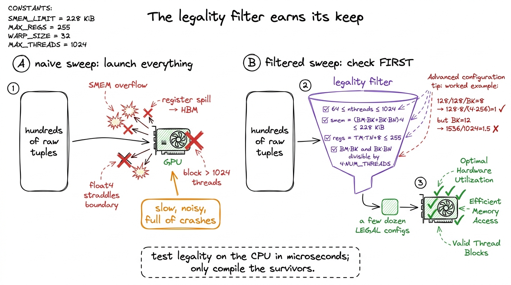
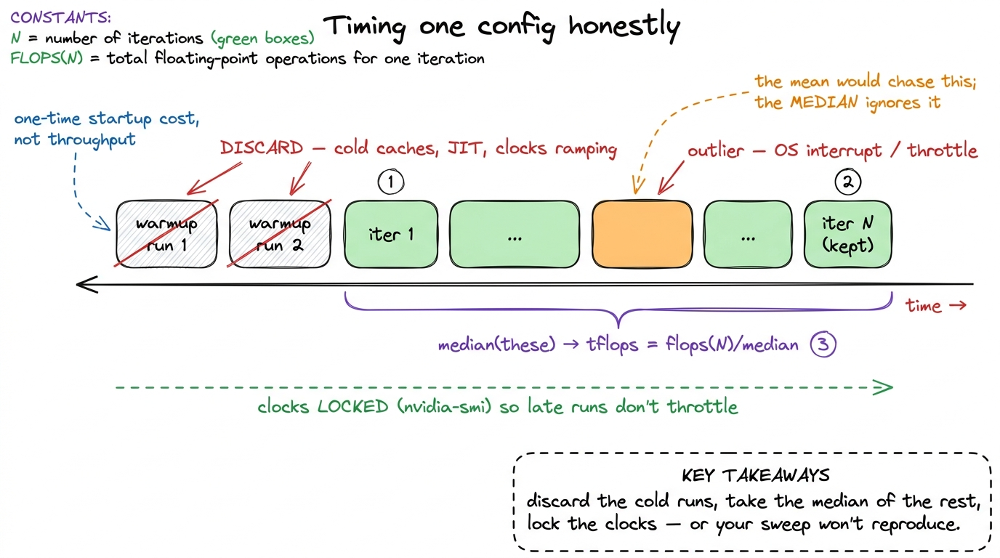
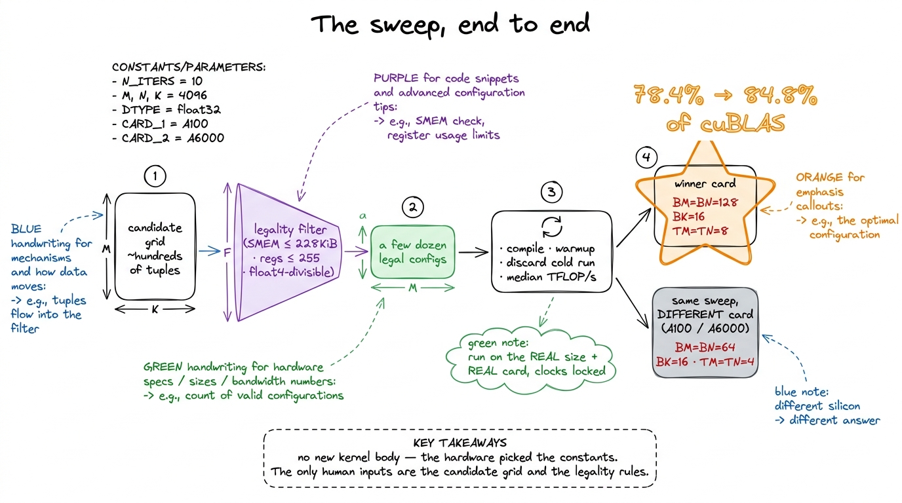

Kernel 7: Autotuning the tiles 84.8%
By kernel 6 we had done something slightly dishonest. The vectorized kernel reached 78.4% of cuBLAS, and every one of those tile sizes — BM, BN, BK, TM, TN — was a number I had picked. I picked them the way everyone picks them: 128 × 128 blocktile, 8 × 8 per thread, BK = 8, because they looked round and they fit in shared memory. They worked. But "they worked" is not the same as "they are optimal", and the whole premise of this site is that we let measurement, not taste, choose the next move.
So this kernel is strange: it writes no new CUDA. The kernel body is byte-for-byte the vectorized one. What changes is that we stop guessing the constants and start searching them — a grid search over the tile-shape parameter space, run once per GPU, that hands us the best configuration by brute force. It is the least glamorous entry in the ladder and one of the most important, because it is the moment the code stops being a clever thing I wrote and becomes a thing the hardware voted for.
Before we go further, let me make sure we are all standing on the same ground, because this article only makes sense if you already believe one claim from the earlier kernels. Here is that claim, recapped in a paragraph so a newcomer can start right here.
The one thing you need from the earlier kernels
A GPU matmul is a story about not touching slow memory. Multiplying two N × N matrices is 2N³ floating-point operations but only 3N² numbers to read and write. For N = 4096 that is about 137 billion FLOPs against 50 million floats. The math is cheap; the fetching is expensive. A H100 can do roughly 67 TFLOP/s of FP32 but only pull about 3.35 TB/s from HBM. If every multiply had to fetch its two operands fresh from HBM, we would spend all our time waiting on memory and the arithmetic units would sit idle.
The fix, built up across kernels 3 through 6, is tiling: copy a small square of each matrix from slow HBM into fast on-chip shared memory once, then reuse those values many times before throwing them away. The bigger the square you copy, the more times you reuse each fetched byte, so the less HBM traffic you pay per unit of math. That ratio — flops done per byte moved — is called arithmetic intensity, and raising it is the entire game.

figure rendering · The mental model for the whole GEMM ladder: don't run to the store perHold that fridge picture. Everything below is about one question: how big should the fridge be, and how should we cut up the work inside it? The naive answer is "as big as possible", and it is wrong for a reason that is the heart of this article. Let me build up to why.
What exactly are the five knobs?
Our template kernel has five constants, and it is worth naming them precisely, because they are not five independent dials — they are three nested tilings, each one feeding the next level of the memory pyramid. If you get the nesting straight now, the rest is easy.
BM,BN,BK— the blocktile. One thread block loads aBM × BKslab ofAand aBK × BNslab ofBfrom global memory into shared memory, then marches theBKdimension across the fullKof the matrix. These decide how much HBM traffic we amortize — how big the fridge is.TM,TN— the threadtile. Inside the block, each individual thread computes aTM × TNpatch of the output all by itself. It holds thoseTM × TNrunning sums in registers (the fastest storage there is) and streams operands out of shared memory to update them. These decide arithmetic intensity inside the SM — how much cooking each cook does before looking up.- The thread count is not a knob at all. It falls out of the other four:
NUM_THREADS = (BM · BN) / (TM · TN). The block coversBM · BNoutput elements; each thread claimsTM · TNof them; divide and you get how many threads you need.
Let me do that last division by hand so it is concrete, because this one number is where all the coupling comes from. A 128 × 128 blocktile with 8 × 8 threadtiles needs (128 · 128) / (8 · 8) = 16384 / 64 = 256 threads. So the block is 256 threads — 8 warps. I never chose "256 threads"; it appeared the moment I chose the tiles. And that is the whole subtlety of this kernel in one sentence: change one tile and you have silently changed the block size, the occupancy, and the register pressure all at once. They move together, whether you meant them to or not.

figure rendering · The five template parameters are three nested tilings — block, then thFirst instinct: just derive the best tile on paper. Why doesn't that work?
When I first hit this, my instinct was obvious: I understand the hardware, so let me just compute the optimal tile. Bigger blocktiles raise arithmetic intensity — we said that — so surely I make BM and BN as large as they fit and I'm done? Let me follow that instinct honestly, because watching it fail is the entire lesson.
Here is the reasoning for "bigger is better," made concrete. Take a 64 × 64 blocktile versus a 128 × 128 one. For each step along K, both must load their A slab and B slab from HBM. The 64 tile produces 64 · 64 = 4096 output elements from that load; the 128 tile produces 128 · 128 = 16384 — four times the math from a load that only grew by two times in each dimension. So the 128 tile reuses each fetched byte across more multiplies. Its arithmetic intensity is higher. If reuse were the only force in the universe, you would keep doubling until you ran out of matrix.
But every force pulling toward "bigger" has a twin pulling toward "smaller", and the twins are paid in different currencies, which is exactly why you can't just eyeball the winner. Three ceilings push back:
- Shared memory is finite. Each block needs
(BM · BK + BK · BN)floats of SMEM — double that if you double-buffer. An SM on the H100 offers up to228 KiBof SMEM,1 Those228 KiBare not a hard architectural constant. On the H100 the SMEM and L1 share a single256 KiBphysical block per SM, and how much of it you may declare as SMEM is an opt-in you request withcudaFuncSetAttribute. The usable ceiling sits a few KiB below256because L1 and driver reservations claim the rest. On earlier cards like the A6000 the practical per-block ceiling is much lower — Boehm's original writeup caps at48 KiB, the classic opt-in threshold. The number is a property of the card, which is a preview of why the answer is a property of the card too. and that budget is shared by every block resident on the SM at once. A bigger tile means fewer blocks fit — or your double-buffering doesn't fit at all. - Registers are finite. A
TM × TNthreadtile needs at leastTM · TNaccumulator registers per thread, plus registers for operands and index math. An8 × 8threadtile is already64accumulators before you count anything else. Cross 255 registers per thread and the compiler spills to "local memory," which despite the friendly name is HBM wearing a costume — the exact slow path we built all this tiling to avoid. The register file is65,53632-bit registers per SM (256 KB), split across every resident thread, so more registers per thread means fewer threads can be resident. - Occupancy is the thing both of those throttle. Occupancy is how many warps the SM can keep in flight at once. It matters because it is how the GPU hides latency: when one warp stalls waiting on a memory load, the scheduler instantly runs a different ready warp, so the arithmetic units never idle. A tile so hungry for SMEM and registers that only one or two blocks fit per SM leaves the scheduler with almost nothing to switch to — and then a single stalled warp stalls the whole SM, because there is nothing behind it to hide the wait.
So now watch what the two forces do together. Make the tile bigger: intensity goes up (good) but occupancy goes down (bad). Make it smaller: occupancy recovers (good) but you move more HBM traffic per flop (bad). The best tile is not at either extreme. It is somewhere in the interior — big enough to feed the pipeline, small enough that enough warps stay resident to hide the memory latency.

figure rendering · Two forces, opposite directions, different currencies. Reuse wants bigAnd here is the honest punchline of the paper approach: I can draw those two curves, but I cannot compute where they cross. The crossing point depends on how the register allocator happened to assign registers, on the exact SMEM carve-out the driver granted, on the specific SASS the compiler emitted for this tile shape — none of which I can run in my head. The optimum is real, it is interior, and it is unpredictable from first principles. That gap — I can prove the optimum exists but not locate it — is the entire reason autotuning exists. We stop trying to out-think the compiler and just measure it.
The method: a grid search with a legality filter
If we can't reason our way to the answer, we sweep. Try every reasonable tile shape, time each one, keep the fastest. Brute force. But a disciplined brute force, because a naive sweep wastes most of its time on configurations that could never have run.
Why can't they run? Because most tuples in the raw cross-product are illegal — they overflow SMEM, blow the register file, or produce a thread count that can't vectorize. If we enumerate all of them and just let the bad launches fail on the GPU, the sweep is slow and noisy, full of crashes and error handling. Far better: generate candidates and pass each through a legality filter before it ever touches the GPU, so we only compile and time configurations that can actually run.
The candidate grid is small on purpose — powers of two and a few near them, over sensible ranges:
BM = [64, 128, 256]
BN = [64, 128, 256]
BK = [8, 16, 32, 64]
TM = [4, 8, 16]
TN = [4, 8, 16]
def legal(BM, BN, BK, TM, TN, smem_cap=228*1024, max_regs=255):
nthreads = (BM * BN) // (TM * TN)
if not (64 <= nthreads <= 1024): # block-size limits
return False
if (BM * BN) % (TM * TN) != 0: # tile must divide evenly
return False
# vectorized float4 SMEM loads: each thread loads whole float4s
if (BM * BK) % (4 * nthreads) != 0: # A slab is float4-loadable
return False
if (BK * BN) % (4 * nthreads) != 0: # B slab is float4-loadable
return False
smem = (BM * BK + BK * BN) * 4 # bytes, single-buffered
if smem > smem_cap:
return False
est_regs = TM * TN + 8 # accumulators + overhead
return est_regs <= max_regs
configs = [c for c in itertools.product(BM, BN, BK, TM, TN) if legal(*c)]That filter is the entire trick, so let me walk each check the way I'd walk it for a student, because each line is a hardware fact in disguise.
The nthreads bound is just the block-size limit: a CUDA block is at least a warp and at most 1024 threads, so any tile implying fewer than 64 or more than 1024 threads is dead on arrival. The even-division check makes sure the block tiles the output cleanly with no leftover cells. The smem check is our fridge-size ceiling: (BM · BK + BK · BN) · 4 bytes must fit under the SMEM cap. And est_regs = TM · TN + 8 is a rough count of accumulators-plus-overhead that must stay under 255 or the compiler spills.
The two checks people always forget are the float4 divisibility ones, and they are worth a concrete number. The vectorized kernel loads each SMEM slab as 128-bit chunks — that is a float4, four floats at once, which is how it hits full memory bandwidth. For that to work, each thread must load whole float4s with none straddling a boundary, so BM · BK and BK · BN must each be a multiple of 4 · NUM_THREADS. Let me test the hand-picked config: 128 × 128, 256 threads, BK = 8. Then BM · BK / (4 · NUM_THREADS) = (128 · 8) / (4 · 256) = 1024 / 1024 = 1. An integer — legal. Now nudge BK from 8 to 12: (128 · 12) / 1024 = 1536 / 1024 = 1.5. Not an integer — illegal, silently, even though 128/128/12/8/8 looks perfectly balanced.2 This is exactly the constraint Boehm calls out — BM * BK divisible by 4 * NUM_THREADS. It is why some tile shapes that look reasonable are quietly rejected: the geometry is fine, but the vectorized load can't be cut into clean float4s, so the whole 128-bit vectorization collapses and the config is worse than useless.
After the filter runs, a grid that starts as a few hundred raw tuples collapses to a manageable set of legal ones — in Boehm's original A6000 sweep, about 400 valid configurations survived; with the tighter H100 ranges here it lands in the low dozens. Either way it is small enough to sweep exhaustively in minutes, not a search space that needs anything clever.

figure rendering · The same brute-force idea, done two ways. Launching everything means mfloat4 example shows why some innocent-looking tiles never make it through.Running the sweep
The runner itself is embarrassingly simple, and that simplicity is a feature, not a limitation. For each legal config we recompile the template kernel with those constants baked in, run it a few times on the target matrix size, throw away the warmup runs, and keep the median TFLOP/s:
best = None
for cfg in configs:
binary = compile_kernel(cfg) # -DBM=... -DBN=... etc.
for _ in range(warmup): binary.run(A, B, C)
ts = [time(lambda: binary.run(A, B, C)) for _ in range(iters)]
tflops = flops(N) / median(ts)
if best is None or tflops > best.tflops:
best = Result(cfg, tflops)No gradient, no Bayesian optimizer, no learned surrogate model. The space is small enough that exhaustive beats smart — trying all of them outright is faster to write and impossible to get wrong, and a few dozen recompiles is a coffee break, not an overnight job. When your search space is this small, cleverness is a liability; it can only introduce bugs and blind spots.
A few details in that loop are doing quiet, load-bearing work, and skipping them is how people get autotuning results they can't reproduce.
The warmup matters because the very first launch of a kernel pays one-time costs — JIT/driver setup, cold caches, the GPU ramping its clocks up from idle. Time that run and you are measuring startup, not steady-state throughput. We discard it. The median, not the mean, matters because timings have a heavy right tail: an occasional run gets interrupted by the OS or a clock throttle and comes back slow. The mean chases those outliers; the median ignores them and reports the typical run, which is what we actually care about.

figure rendering · How a single config is actually timed. Two throwaway warmups, then N r3 There is a deeper trap here on modern datacenter GPUs: thermal and power throttling. An H100 held at its power limit will quietly drop its clocks after sustained load, so a config timed while the card is hot can look slower than an identical config timed cold. Serious autotuners fix the clocks with nvidia-smi --lock-gpu-clocks, or at least interleave configs so throttling hits them all equally. It is the single easiest way to get a sweep that doesn't reproduce.
And the one rule I hold to above all: autotune on the real problem. Tune at the exact matrix size and dtype you will actually run, on the actual card you will actually run it on. The answer does not transfer between shapes any more than it transfers between GPUs — a tile tuned for a big square 4096 × 4096 matmul can be a poor fit for a tall-skinny 4096 × 4096 × 128 one, because the two have different amounts of reuse to exploit.
The measurement
I ran the sweep and let it grind. The winning configuration on this hardware came back as BM = BN = 128, BK = 16, TM = TN = 8 — almost my hand-picked guess, except that the grid search doubled BK from 8 to 16. That deepens each shared-memory reduction step, so more math happens per SMEM round-trip. That one change lifts us from 78.4% to 84.8% of cuBLAS — a clean six-point gain for zero new kernel code.4 Six points from a constant is not a rounding error at this altitude. Going from 78.4% to 84.8% closes nearly a third of the remaining gap to cuBLAS, and it cost me a bash loop and lunch. This mirrors Boehm's A6000 result almost exactly: his sweep found the same BM=BN=128, BK=16, TM=TN=8 shape and squeezed a further ~5%, from 19 to 20 TFLOP/s. The last points on this ladder are always the expensive ones — and this is the cheapest six points we'll ever buy.
Two things about this result are worth stopping and sitting with, because they are the reason this unglamorous kernel earns its place on the ladder.
First: my intuition was nearly right, and the mistake it made was invisible to reasoning. I would never have guessed that BK = 16 beats BK = 8 here, because the difference lives entirely in how the register allocator and the SMEM-load scheduling interact at that specific occupancy. Reading the SASS afterward, the BK = 16 build issues its shared-memory loads in a pattern that overlaps better with the FMA pipeline — but I could only explain that after the search found it, never predict it beforehand. That gap between "can explain after the fact" and "could have predicted in advance" is the whole justification for autotuning. Boehm puts it more bluntly than I could: he admits he "can't explain why these specific parameters end up producing the optimal performance... it also feels very unsatisfying."5 I feel exactly the same, and I think the discomfort is the point. The grid search is, in part, an admission — a confession that the compiler-plus-hardware system is too complex to model exactly, so we stop pretending we can and measure it instead. Autotuning is what intellectual honesty looks like once the system outgrows your ability to predict it. I feel the same discomfort. It is the honest price of working this close to the metal.

figure rendering · The sweep in four stages. Notice the two winner cards: identical code,Second — and this is what makes autotuning non-optional rather than a nice-to-have — the answer is per-GPU. The exact same sweep on an A100 does not return 128/128/16/8/8. It prefers a smaller BM = BN = 64, BK = 16, TM = TN = 4, because the A100's SMEM carve-out, register file, and warp scheduler strike the occupancy-versus-tile balance at a different point on that crossing-curves picture from earlier.6 Boehm measured this directly across two cards: on the A100 the A6000's winning tuple gave 12 TFLOP/s, while the A100's own best tuple gave 12.6 — a free ~5% left on the floor purely by shipping the wrong card's constants. Small, but it is the same size as the entire gain we just celebrated, and it costs nothing but a re-run to reclaim. Take the H100's winning constants, ship them unchanged to an A100, and you leave measurable performance on the floor. Say it plainly, because it reframes everything: a tile shape is not a property of the algorithm — it is a property of the machine. Different machines have genuinely different opinions about the best way to cut up the same matmul, and the only way to learn a machine's opinion is to ask it.
What this bought us, and why every real library does it
We are at 84.8% of cuBLAS, and we got there by deleting judgment from the hot path. That is the deeper point of this whole kernel: past a certain level of optimization, tuning stops being a decision a human makes and becomes a step in the build — something you run once per architecture, cache, and forget.
This is not a toy pattern. It is exactly how the real libraries work, right now, in production:
- cuBLAS, the very baseline we keep measuring against, ships thousands of pre-tuned kernel variants and picks one at runtime based on the problem shape and the detected GPU. Its "magic" is, in large part, an enormous offline sweep NVIDIA ran so you don't have to.
- CUTLASS is a template library whose entire design is parameterized over exactly these tile dimensions, built so a sweep can instantiate and time hundreds of variants.
- Triton, which powers a huge fraction of the custom kernels running in vLLM and PyTorch today, exposes
@triton.autotune— you hand it a list of tile configs and it runs precisely the median-timing grid search we just built, caching the winner per input shape. - FlashAttention ships hand-picked tile sizes per head-dimension and per GPU generation for the same reason — the authors swept them so your attention kernel gets the right block size on an H100 without you thinking about it.
We just built the smallest honest version of that machinery, and now the giant versions inside those libraries should feel like the same idea scaled up, not black magic.
But be clear about what the search did not fix. It only rearranged work that a single warp still does the same clumsy way. Every thread in the winning config still reads its operands out of shared memory one float4 at a time, and threads within a warp step on each other's SMEM banks more than they should — a bank conflict problem the tile shape can't touch. No BM/BN/BK/TM/TN tuple rewrites the access pattern within a warp; grid search searches over tile sizes, not over how 32 lanes cooperate. To go further we have to stop treating the warp as 32 independent threads and start treating it as a single unit — a warptile whose 32 lanes are laid out to hit all 32 SMEM banks conflict-free and to reuse operands across lanes. That is the next kernel, and it is the one that finally breaks 90% of cuBLAS.